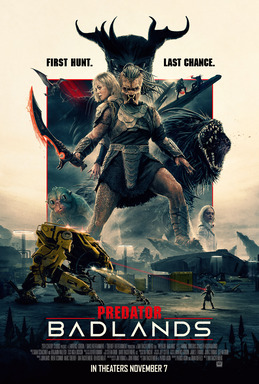
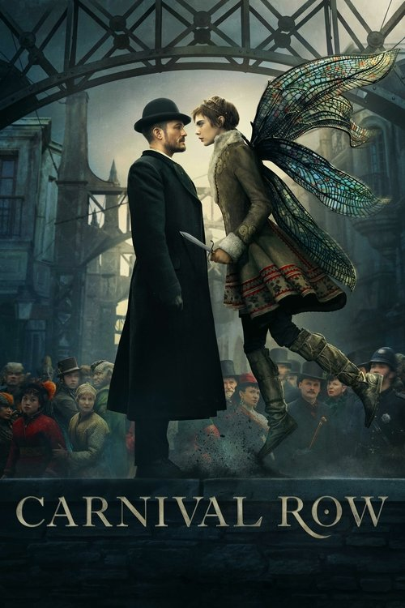

-
2024
 VES WinRonja, the Robber's DaughterCG Technical Director / Groom Artist · ILP
VES WinRonja, the Robber's DaughterCG Technical Director / Groom Artist · ILPBuilt the Queen Harpy end-to-end — feather grooming, muscle and feather simulation, full lookdev. Authored the show's Generate Groom automation: a single ShotGrid action that ran groom, sim, lighting and slap-comp through Job Chain so animators could iterate on fully-rendered creature shots overnight. 2025 VES Award winner — Outstanding Character in an Episode. Full breakdown →
-
2025
 The Last of Us, Season 2CG Technical Director · ILP
The Last of Us, Season 2CG Technical Director · ILPCreature effects, automation and pipeline development on the Bloater — muscle, fascia and skin-sliding setup, groom integration, and the Job Chain workflows that handed the character off through CFX, lighting and comp.
-
2025

Predator: BadlandsPipeline TD · ILPPipeline automation work on the show — extended Job Chain's ShotGrid integration so the CFX team could submit simulation chains directly from a ShotGrid action. No artist had to leave their tracker to dispatch a sim; the chain ran end-to-end on the farm.
-
2023
 Indiana Jones and the Dial of DestinyGroom & CFX TD · ILP
Indiana Jones and the Dial of DestinyGroom & CFX TD · ILPFull grooming and hair-simulation pipeline for character work on the show. Built the cross-department handoff automation — the chains that took a CFX cache, ran groom against it, and published cleanly into lighting — so character versions moved through the pipeline without manual stitching at every step.
-
2022
 VES Nom.Stranger Things, Season 4CG Technical Director · ILP
VES Nom.Stranger Things, Season 4CG Technical Director · ILPBuilt the technical CFX setup for the Demogorgon and Demodogs — muscle, fascia and skin-sliding systems running at production scale across multiple VES-nominated episodes (Outstanding Visual Effects). The first show to run on the Job Chain framework: the CFX-to-lighting handoff was authored as automation so lighters could focus on shots, not setup. Authored and shipped the early Job Chain processes that the rest of the studio's pipeline grew on top of.
-
2022
 SlumberlandILP
SlumberlandILPCFX and groom support work on the feature.
-
2022
 The SandmanGroom & CFX TD · ILP
The SandmanGroom & CFX TD · ILPGroom and CFX pipeline work across the series — character grooms, multi-character cache management, and the publishing chains that moved them through into lighting.
-
2021
 Battlefield 2042: ExodusPipeline TD · ILP
Battlefield 2042: ExodusPipeline TD · ILPTD-tools work on the launch cinematic. Built Populate Scene — a tool that pulled crowds and assets directly into lighting scenes without manual per-shot setup — and shipped the show's groom and caching tools, in line with the systems used on other CFX shows. Procedural modelling work on the cinematic's signature droplet effects.
-
2021
 Far Cry 6: Chicharron RunGroom & Pipeline TD · ILP
Far Cry 6: Chicharron RunGroom & Pipeline TD · ILPTechnical lead on the feather grooming for the cinematic — every character, every feather, owning the technical groom setup end-to-end and making sure it held up across the show. Owned the caching and fetching pipeline for character data through the rest of the production. Also shipped Populate Scene (the same crowd/asset-into-lighting tool used on Battlefield 2042) and the show's groom and caching tools.
-
2020
 Star Wars: The Mandalorian, Season 2Lighting TD / 3D Generalist · ILP
Star Wars: The Mandalorian, Season 2Lighting TD / 3D Generalist · ILPHero creature lighting and lookdev across 4 episodes, including the Cyclops — direct/indirect light balance, character integration into plate environments, and continuity across the season's creature beats. Environment work, 3D modelling and tool development on the side.
-
2020
 Westworld, Season 3Lighting TD · ILP
Westworld, Season 3Lighting TD · ILPHero lighting on Dolores across HBO's flagship sci-fi series — character integration into complex environment plates, holding mood and continuity across the season's hero sequences.
-
2019
 Lost in Space, Season 2Lighting TD — Hero Environments · ILP
Lost in Space, Season 2Lighting TD — Hero Environments · ILPHero environment lighting across the full season (10 episodes) — large-scale water sims, atmospherics and volumetrics, and cinematic sequence lighting. Owned the look from layout through final picture, designing setups that held mood and continuity across long sequences.
-
2019

Carnival Row, Season 1Lighting TD · ILPHero shot lighting across the season — character and environment lighting on Amazon's fantasy series, holding mood and continuity through the show's signature gas-lit, painterly look.
-
2018
 Jurassic World: Fallen KingdomLighting / Lookdev / Environment · ILP
Jurassic World: Fallen KingdomLighting / Lookdev / Environment · ILPLighting, lookdev and environment work on creature and environment-driven sequences — direct/indirect light balance and continuity across creature scenes. 3D modelling, environment building and tool development alongside the shot work.